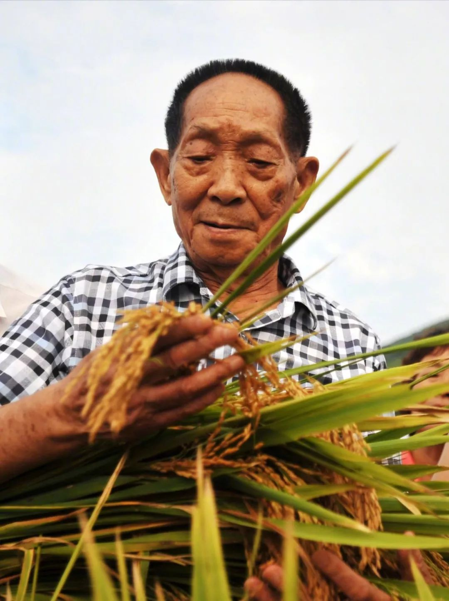

2021年5月22日13时07分,“共和国勋章”获得者、中国工程院院士、国家杂交水稻工程技术研究中心主任、湖南省政协原副主席袁隆平,因多器官功能衰竭,在长沙逝世,享年91岁
出生,籍贯江西省九江市德安县
随父母居住北平、天津、江西九江、江西赣州、湖北汉口等地
就读重庆北碚夏坝的相辉学院农学系
在西南农学院农学系农作物专业学习
院系调整并入重庆新建的西南农学院农学系,袁隆平续读3年至毕业1951年 在西南农学院报名参加空军,体检、政审合格,后因在校大学生更需参加经济建设,而未入伍,继续留校学习
毕业于西南农学院。服从全国统一分配,到湖南省怀化地区的安江农校任教，1953年8月-1971年1月任湖南省安江农业学校教员
与农技干部邓则结婚
任湖南省农业科学院水稻所研究员,省杂交水稻研究协作组成员
任农业部科学技术委员会委员、中国作物会副理事长、中国遗传学会理事、湖南省生物学会理事、湖南省遗传育种学会副理事长、湖南省农学会理事
被聘为农牧渔业部技术顾问、中国杂交稻专家顾问组副组长
湖南杂交水稻研究中心成立,袁隆平任中心主任
被聘为湖南省安江农校名誉校长、西南农业大学兼职教授
湖南省政协副主席,湖南杂交水稻研究中心主任,湖南省农业科学院名
任湖南省农业科学院名誉院长。同年受聘合国粮农组织国际首席顾问
湖南省政协副主席,国家杂交水稻工程技术研究中心主任(1995年当选为中国工程院院士)
海南省人民政府在三亚市举行仪式,聘请袁隆平院士为海南省政府高级科技顾问
被贵州省人民政府聘为贵州省农业科学院顾问 2008年 担任湖南生物机电职业技术学院名誉院长2013年 当选湖南省政协副主席 当选政协十二届中国委员会常务委员 袁隆平辞免湖南省政协副主席职务 ,聘请袁隆平院士为海南省政府高级科技顾问
担任湖南生物机电职业技术学院名誉院长2013年 当选湖南省政协副主席 当选政协十二届中国委员会常务委员 袁隆平辞免湖南省政协副主席职务 ,聘请袁隆平院士为海南省政府高级科技顾问
当选湖南省政协副主席 当选政协十二届中国委员会常务委员 袁隆平辞免湖南省政协副主席职务 ,聘请袁隆平院士为海南省政府高级科技顾问
当选为中国发明协会“会士”
任袁隆平国际高端农业人才培养中心理事会主席
由隆平高科出资成立的第三代杂交水稻种业有限公司在长沙揭牌,袁平任董事长。同日,袁隆平应邀担任重庆市北碚区人民政府顾问